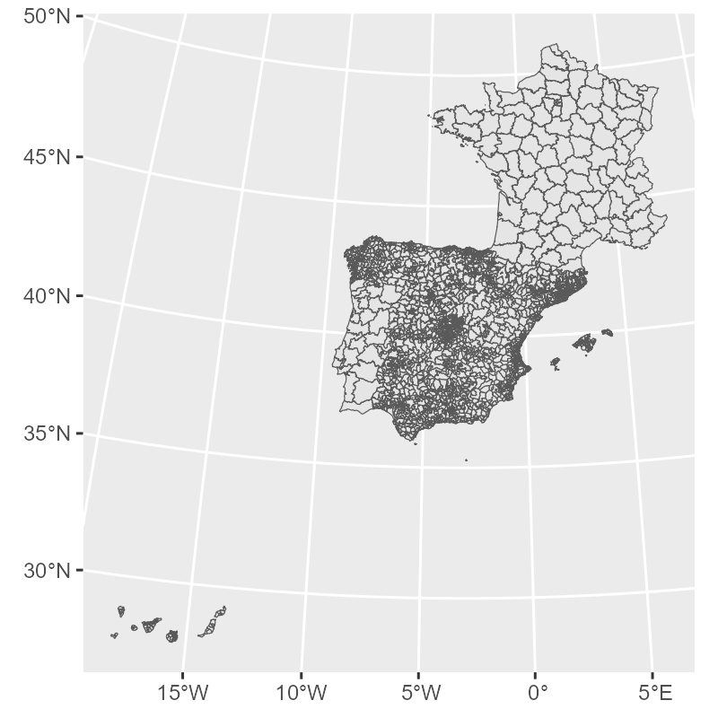
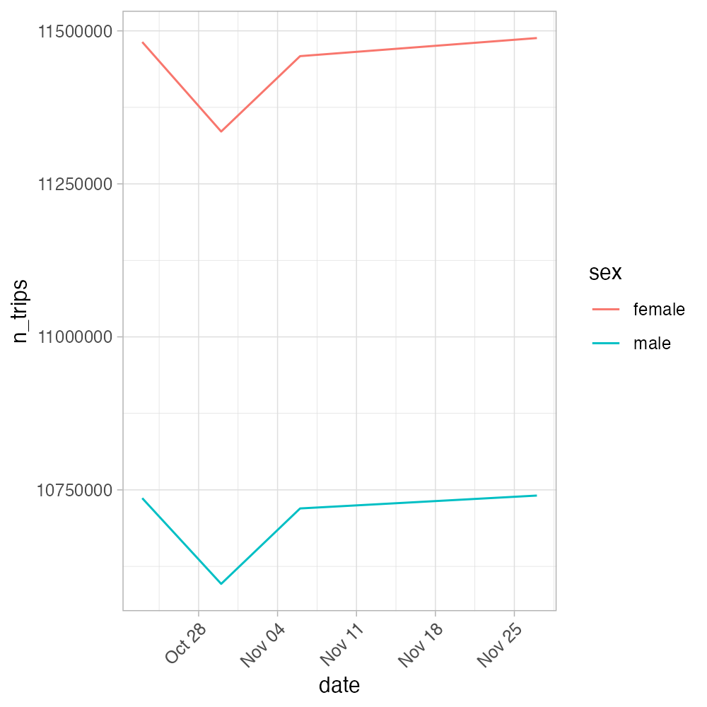

![]()
library(spanishoddata)
library(tidyverse)
library(sf)1b. 📊 Tutorial: Getting the Open Human Mobility Data in a Reproducible Way using spanishoddata and aggregating it with duckdb
1 Setup
Before getting the data, make sure you have {spanishoddata} R package installed and loaded. We will also need {tidyverse} and {sf}.
The package needs a dedicated location on disk to save the data it downloads. Set it with:
spod_set_data_dir("data")The folder will be created if it does not exist.
Data directory /path/to/your/working/dir/data does not exist. Attempting to create it.
Data directory is writeable.
Data directory successfully set to: /path/to/your/working/dir/dataHere we are just setting the data directory to a subdirectory called data in the current working directory. If you want to use a different directory, change the path to something like spod_set_data_dir("C:/path/to/data") on Windows or spod_set_data_dir("/path/to/data") on Linux/macOS.
Warning
If you do not set the data directory, the package will still work, but it will download the data into a termporary directory of the current R session and you will lose it if you restart the session.
Now you are all set to start accessing the data!
2 Get the data
The data consists of zone boundaries spatial data and flat tables with flows between the zones. There are more details in the codebooks on the package website (codebook for v1 data covering years 2020-2021, codebook for v2 data covering years 2022 onwards).
Note
We will be working with v2 data, as it is more advanced and contains more variables.
Warning
v1 and v2 data are not directly comparable in terms of absolute number of trips between locations, as the methodologies for data colleciton and generation are slightly different.
2.1 Get the zone boundaries data
zones <- spod_get_zones(zones = "districts", ver = 2)glimpse(zones)Rows: 3,909
Columns: 10
$ id <chr> "01001", "01002", "01004_AM", "01009_AM", "01010", "01017_AM", "01028_AM", "01…
$ name <chr> "Alegría-Dulantzi", "Amurrio", "Artziniega agregacion de municipios", "Asparre…
$ population <dbl> 2925, 10307, 3005, 4599, 2951, 4314, 7515, 18009, 3418, 3771, 5029, 2636, 4466…
$ census_sections <chr> "0100101001; 0100101002", "0100201001; 0100201002; 0100201003; 0100201004; 010…
$ census_districts <chr> "0100101", "0100201", "0100401; 0104201", "0100901; 0101301; 0102101; 0102701;…
$ municipalities <chr> "01001", "01002", "01004; 01042", "01009; 01013; 01021; 01027; 01053; 01061", …
$ municipalities_mitma <chr> "01001", "01002", "01004_AM", "01009_AM", "01010", "01017_AM", "01028_AM", "01…
$ luas_mitma <chr> "01001", "01002", "01004_AM", "01009_AM", "01010", "01017_AM", "01028_AM", "01…
$ district_ids_in_v1 <chr> "01001_AM", "01002", "01010_AM", "01001_AM", "01010_AM", "01043_AM", "01031_AM…
$ geometry <MULTIPOLYGON [m]> MULTIPOLYGON (((538090.2 47..., MULTIPOLYGON (((501984.9 47..., M…gg_zones <- zones |>
st_simplify(dTolerance = 400) |>
ggplot() +
geom_sf(linewidth = 0.2)
gg_zones
2.2 Get the flows data
2.2.1 Define the dates
Let us get a few days of data.
We can get all dates that are available in the data:
available_dates <- spod_get_valid_dates(ver = 2)Define the dates of interest, for example May 2nd and May 9th, 2024, and check if they are available in the data:
dates <- c("2024-05-02", "2024-05-09")
all(dates %in% available_dates)TRUEIf you are using our provided Binder container in a web browser to follow the tutorial, do not try to analyze more than 2 days at once, as it will likely crash the instance. In this case, even the magic of DuckDB does not help overcome the 2GB memory limit. If you computer has 4-8 GB of RAM, you should be good to go.
Note that some dates may be missing:
"2024-11-09" %in% available_datesFALSE
Warning
Due to mobile network outages, the data on certain dates is missing. Kindly keep this in mind when calculating mean monthly or weekly flows.
Please check the original data page for currently known missing dates. You can use spod_get_valid_dates() function to get all available dates as shown above.
The code below will download the requested dates and create the flows table.
If you are using our pre-converted data from SSD
If you are using the files copied from the SSD passed around during the workshop (kindly, remember to return it), you can instead use spod_connect() function to load the pre-converted data in DuckDB format that is optimized for speed. In this case you will be able to quickly analyze multiple dates available in respective folders of the SSD. Open the *.Rproj file in the root of the folder you copied and see some starter code in start-here.R to point the spod_connect() towards a *.duckdb file.
| Folder | Dates |
|---|---|
| 5GB_2023_15-aug-15-sep_od_distr | 15 August — 15 September 2023 |
| 10GB_2023_aug-sep_od_distr | 1 August — 30 September 2023 |
| 15GB_2023_jul-aug-sep_od_distr | 1 July — 30 September 2023 |
| 60GB_2023_od_distr | 1 January — 31 December 2023 |
flows <- spod_get(
type = "origin-destination",
zones = "districts",
dates = dates
)
Tip
For the 4 requested dates, the spod_get() call above will download just under 1 GB of data. If you need to download more days, you will have to set the max_download_size_gb argument in spod_get(). This is a precaution against downloading too much data at once.
You can now print the table to preview it:
flowsflows
# Source: table<od_csv_clean_filtered> [?? x 20]
# Database: DuckDB v1.3.1 [root@Darwin 24.5.0:R 4.5.1/:memory:]
date hour id_origin id_destination distance activity_origin activity_destination study_possible_origin
<date> <int> <fct> <fct> <fct> <fct> <fct> <lgl>
1 2024-05-02 21 01002 01001 10-50 frequent_activity home FALSE
2 2024-05-02 0 01009_AM 01001 10-50 frequent_activity home FALSE
3 2024-05-02 13 01009_AM 01001 10-50 frequent_activity home FALSE
4 2024-05-02 15 01009_AM 01001 10-50 frequent_activity home FALSE
5 2024-05-02 17 01009_AM 01001 10-50 frequent_activity home FALSE
6 2024-05-02 19 01009_AM 01001 10-50 frequent_activity home FALSE
7 2024-05-02 20 01009_AM 01001 10-50 frequent_activity home FALSE
8 2024-05-02 21 01009_AM 01001 10-50 frequent_activity home FALSE
9 2024-05-02 22 01009_AM 01001 10-50 frequent_activity home FALSE
10 2024-05-02 15 01017_AM 01001 10-50 frequent_activity home FALSE
# ℹ more rows
# ℹ 12 more variables: study_possible_destination <lgl>, residence_province_ine_code <fct>,
# residence_province_name <fct>, income <fct>, age <fct>, sex <fct>, n_trips <dbl>, trips_total_length_km <dbl>,
# year <int>, month <int>, day <int>, time_slot <int>
# ℹ Use `print(n = ...)` to see more rowsOr use glimpse() to view its structure:
glimpse(flows)Rows: ??
Columns: 20
Database: DuckDB v1.3.1 [root@Darwin 24.5.0:R 4.5.1/:memory:]
$ date <date> 2024-05-02, 2024-05-02, 2024-05-02, 2024-05-02, 2024-05-02, 2024-05-02, 2024-0…
$ hour <int> 21, 0, 13, 15, 17, 19, 20, 21, 22, 15, 12, 16, 6, 11, 12, 17, 18, 22, 15, 19, 2…
$ id_origin <fct> 01002, 01009_AM, 01009_AM, 01009_AM, 01009_AM, 01009_AM, 01009_AM, 01009_AM, 01…
$ id_destination <fct> 01001, 01001, 01001, 01001, 01001, 01001, 01001, 01001, 01001, 01001, 01001, 01…
$ distance <fct> 10-50, 10-50, 10-50, 10-50, 10-50, 10-50, 10-50, 10-50, 10-50, 10-50, 10-50, 10…
$ activity_origin <fct> frequent_activity, frequent_activity, frequent_activity, frequent_activity, fre…
$ activity_destination <fct> home, home, home, home, home, home, home, home, home, home, home, home, home, h…
$ study_possible_origin <lgl> FALSE, FALSE, FALSE, FALSE, FALSE, FALSE, FALSE, FALSE, FALSE, FALSE, FALSE, FA…
$ study_possible_destination <lgl> FALSE, FALSE, FALSE, FALSE, FALSE, FALSE, FALSE, FALSE, FALSE, FALSE, FALSE, FA…
$ residence_province_ine_code <fct> 01, 01, 01, 01, 01, 01, 01, 01, 01, 01, 01, 01, 01, 01, 01, 01, 01, 01, 01, 01,…
$ residence_province_name <fct> "Araba/Álava", "Araba/Álava", "Araba/Álava", "Araba/Álava", "Araba/Álava", "Ara…
$ income <fct> 10-15, 10-15, 10-15, 10-15, 10-15, 10-15, 10-15, 10-15, 10-15, 10-15, 10-15, 10…
$ age <fct> NA, NA, NA, NA, NA, NA, NA, NA, NA, NA, NA, NA, NA, NA, NA, NA, NA, NA, NA, NA,…
$ sex <fct> NA, NA, NA, NA, NA, NA, NA, NA, NA, NA, NA, NA, NA, NA, NA, NA, NA, NA, NA, NA,…
$ n_trips <dbl> 2.340, 2.241, 2.421, 4.646, 2.421, 5.209, 2.306, 2.340, 5.601, 2.421, 2.306, 3.…
$ trips_total_length_km <dbl> 104.404, 28.306, 29.898, 65.224, 29.898, 95.034, 30.615, 40.013, 101.662, 28.39…
$ year <int> 2024, 2024, 2024, 2024, 2024, 2024, 2024, 2024, 2024, 2024, 2024, 2024, 2024, 2…
$ month <int> 5, 5, 5, 5, 5, 5, 5, 5, 5, 5, 5, 5, 5, 5, 5, 5, 5, 5, 5, 5, 5, 5, 5, 5, 5, 5, 5…
$ day <int> 2, 2, 2, 2, 2, 2, 2, 2, 2, 2, 2, 2, 2, 2, 2, 2, 2, 2, 2, 2, 2, 2, 2, 2, 2, 2, 2…
$ time_slot <int> 21, 0, 13, 15, 17, 19, 20, 21, 22, 15, 12, 16, 6, 11, 12, 17, 18, 22, 15, 19,
Tip
str() and summary() will not work on this data in a way that you might expect, as it is not an ordinary data.frame, but a special tbl_* table object that is actually powered by DuckDB via {duckdb} R package in the background, but pretends to be a tibble (from {tibble}/{dplyr}/{tidyverse}).
class(flows)[1] "tbl_duckdb_connection" "tbl_dbi" "tbl_sql"
[4] "tbl_lazy" "tbl"
Tip
The meaning of all the variables is explained in the codebook.
Getting data even faster
If you only need total daily flows between municipalties without any extra information, you can save time by getting pre-aggregated reduced size data directly from the interactive map hosted by the Ministry of Transport and Sustainable Mobility. To do this, kindly refer to the “Quicky get daily data” vignette. However, this is not recommended for studies that require the code to be reproducible, as the API may change at any time. You can use this functionality for quick mobility estimates and in classroom for experiments.
2.2.2 Data verification
When mobility data files are downloaded with spod_get() or spod_download(), they are automatically checked by file size against known size of the remote files to prevent currupted downloads and preserve data integrity. However, if you would like to do an extra check you can use spod_check_files() with the same arguments you used for spod_get() or spod_download().
file_check <- spod_check_files(
type = "origin-destination",
zones = "districts",
dates = dates
)Data version detected from dates: 2
Using existing disk cache: /path/to/your/working/dir/data/metadata_cache/metadata_s3_v2_2025-07-02.rds
All checked files are consistent.all(file_check$local_file_consistent)TRUEIf the some files were corrupted, you could easily find out which ones with:
file_check |>
filter(local_file_consistent == FALSE)And you would be able to fix this by simply re-running the call to spod_get() or spod_download().
3 Aggregate the data
As noted before, the table you get from spod_get() is not an ordinary R data.frame or tibble. It is a database connection. As a result, you are actually supposed to query it using SQL syntax of DuckDB. However, thanks to the comprehensive ecosystem of R packages, for most operations, you can get away with using {dplyr} funtions and many other {tidyverse} and base R tools, as if this was just a data.frame or tibble table.
Try SQL if you need advanced queries
Not all analytical and data processing capabilities of DuckDB are available via base R and tidyverse functions, in some cases you will have to resort to SQL language. Large language models are of great help with that, do not hesistate to paste the description of the table from glimpse(trips) and your query into your favourite LLM to get the SQL query.
You can send an DuckDB SQL query and get the result as shown below:
con <- dbplyr::remote_con(flows) # get the underlying database connection
table_name <- dbplyr::remote_name(flows) # get the table name
DBI::dbGetQuery(con, glue::glue("SELECT * FROM {table_name} LIMIT 5")) # simple example of SQL query, but can be any query supported by DuckDBMany common data operations are supported, such as {dplyr}’s filter(), select(), mutate(), summarise(), group_by() and more, as well as {lubridate} date and time manipulation functions, and base R sum(), mean(), median(), etc.
3.1 Aggregation examples
Below you will find examples in pure R using {dplyr}/{dbplyr} and equivalent SQL queries, but also executed from R, so that you can run them. For any sequence of {dplyr}/{dbplyr} functions, you can always view the equivalent SQL query by replacing collect() with show_query(), for example:
flows |>
summarise(
n_trips = sum(n_trips, na.rm = TRUE),
.groups = "drop"
) |>
show_query()Gives you:
<SQL>
SELECT SUM(n_trips) AS n_trips
FROM od_csv_clean_filtered3.1.1 Count the total number of over all days
flows |>
summarise(
n_trips = sum(n_trips, na.rm = TRUE),
.groups = "drop"
) |>
collect()DBI::dbGetQuery(
conn = dbplyr::remote_con(flows),
statement = glue::glue(
"
SELECT SUM(n_trips) AS n_trips
FROM {dbplyr::remote_name(flows)}
"
)
)# A tibble: 1 × 1
n_trips
<dbl>
1 293442773.3.1.2 Count total number of trips per day
flows |>
group_by(date) |>
summarise(
n_trips = sum(n_trips, na.rm = TRUE),
.groups = "drop"
) |>
collect()DBI::dbGetQuery(
conn = dbplyr::remote_con(flows),
statement = glue::glue(
"
SELECT date, SUM(n_trips) AS n_trips
FROM {dbplyr::remote_name(flows)}
GROUP BY date
ORDER BY date
"
)
)# A tibble: 2 × 2
date n_trips
<date> <dbl>
1 2024-05-02 143086514.
2 2024-05-09 150356260.3.1.3 Count total number of work trips in the morning hours by women vs men
m_vs_f_morning_commute <- flows |>
filter(!is.na(sex), hour %in% 6:10) |>
group_by(date, sex) |>
summarise(
n_trips = sum(n_trips, na.rm = TRUE),
.groups = "drop"
) |>
arrange(date, sex) |>
collect()
m_vs_f_morning_commuteDBI::dbGetQuery(
conn = dbplyr::remote_con(flows),
statement = glue::glue(
"
SELECT date, sex, SUM(n_trips) AS n_trips
FROM {dbplyr::remote_name(flows)}
WHERE hour BETWEEN 6 AND 10
GROUP BY date, sex
ORDER BY date, sex
"
)
)# A tibble: 4 × 3
date sex n_trips
<date> <fct> <dbl>
1 2024-05-02 female 9997030.
2 2024-05-02 male 9492141.
3 2024-05-09 female 11417441.
4 2024-05-09 male 10838305.Plot it
m_vs_f_morning_commute_plot <- m_vs_f_morning_commute |>
ggplot(aes(x = date, y = n_trips, color = sex)) +
geom_line() +
theme_light() +
theme(axis.text.x = element_text(angle = 45, hjust = 1))
m_vs_f_morning_commute_plotFor the 2 days we selected, the plot would of course look weird, so we show the plot below for a couple more days.

4 Slow aggregation? Convert the data to analysis-ready format
The aggregations above may take 30-60 seconds to complete for 5-7 days. To make the analysis faster even on these few dates, convert the data to an analysis-ready format. By default it is DuckDB. All you need to do is to replace the spod_get() call with spod_convert() call, and then connect to the database with spod_connect(). The conversion for these few days we are working with will take just a minute or two.
Tip
You can read more about the conversion and different formats in the conversion vignette. You can find the up to date speed test comparison of formats using mobility data in https://github.com/e-kotov/spanishoddata-paper-supplement/blob/main/plots/supplement-plots/12_analysis-speed.pdf.
flows_db_path <- spod_convert(
type = "origin-destination",
zones = "districts",
dates = dates
)
flows_db <- spod_connect(flows_db_path)Now try the same aggregations as above, but on the flows_db object. They should be much faster now, alsmost instant. You will notice the speed improvement even for just 2 days compared to CSV. You can find detailed speed comparisons at the dedicated page of the package website.
flows_db |>
summarise(
n_trips = sum(n_trips, na.rm = TRUE),
.groups = "drop"
) |>
collect()flows_db |>
group_by(date) |>
summarise(
n_trips = sum(n_trips, na.rm = TRUE),
.groups = "drop"
) |>
collect()5 Suggested tasks for hands-on practice
- Estimating Stocks from Flows
- Calculate the cumulative number of trips (“stock”) per district per hour over a full day.
- Optionally segment by socio-economic group (if available) and compare the resulting distributions.
- Plot a line chart of
cumulativevs.hour, with one line per district (or facet by a small subset of districts).
- Daily & hourly totals
- Aggregate total trips by
dateandhourwithgroup_by(date, hour)andsummarise(n_trips = sum(n_trips)).
- Create a small-multiples line plot (one panel per date) showing
n_tripsover the hours of the day.
- Aggregate total trips by
- Sex × time-window comparison
- Define two time windows (e.g. morning 6–10 h, evening 17–21 h) and filter the data accordingly.
- Group by
date,sex, and yourwindowvariable to compute total trips, then draw a grouped bar chart: x =date, y =n_trips, fill =sex, facet =window.
- Define two time windows (e.g. morning 6–10 h, evening 17–21 h) and filter the data accordingly.
- Activity-type shares
- For the date
"2024-05-09", group byactivity_originand calculate each activity’s percentage share - Visualize
pctbyactivity_originin a bar chart, ordering bars by descending share.
- For the date
Tip
Feel free to consult any LLM you prefer for code examples. You can also use the {rdocdump} R package to export all documentation and vignettes from {spanishoddata} or other packages into a single text file—and then feed that to your model for richer code suggestions. This helps a lot for the packages that are newer then the model training cut-off date, or the ones that were recently updated with new features.
Quick Start: rdocdump
# Install
install.packages("rdocdump")
# Dump spanishoddata docs + vignettes to TXT
rdocdump::rdd_to_txt(
pkg = "spanishoddata",
file = "spanishoddata_docs.txt",
content = c("docs", "vignettes"),
force_fetch = TRUE,
keep_files = "none"
)Now just attach the spanishoddata_docs.txt file saved into the current project/working directory to your LLM prompt and ask for code examples using the data from the package.
Citation
BibTeX citation:
@online{kotov2025,
author = {Kotov, Egor and Mast, Johannes},
title = {IC2S2 2025 {Workshop:} {Mobility} {Flows} and {Accessibility}
{Using} {R} and {Big} {Open} {Data}},
date = {2025-07-21},
url = {https://e-kotov.github.io/spanish-open-mobility-workshop-ic2s2-2025/1-mobility-data-tutorial.html},
doi = {10.5281/zenodo.16238597},
langid = {en}
}
For attribution, please cite this work as:
Kotov, Egor, and Johannes Mast. 2025. “IC2S2 2025 Workshop:
Mobility Flows and Accessibility Using R and Big Open Data.” July
21, 2025. https://doi.org/10.5281/zenodo.16238597.